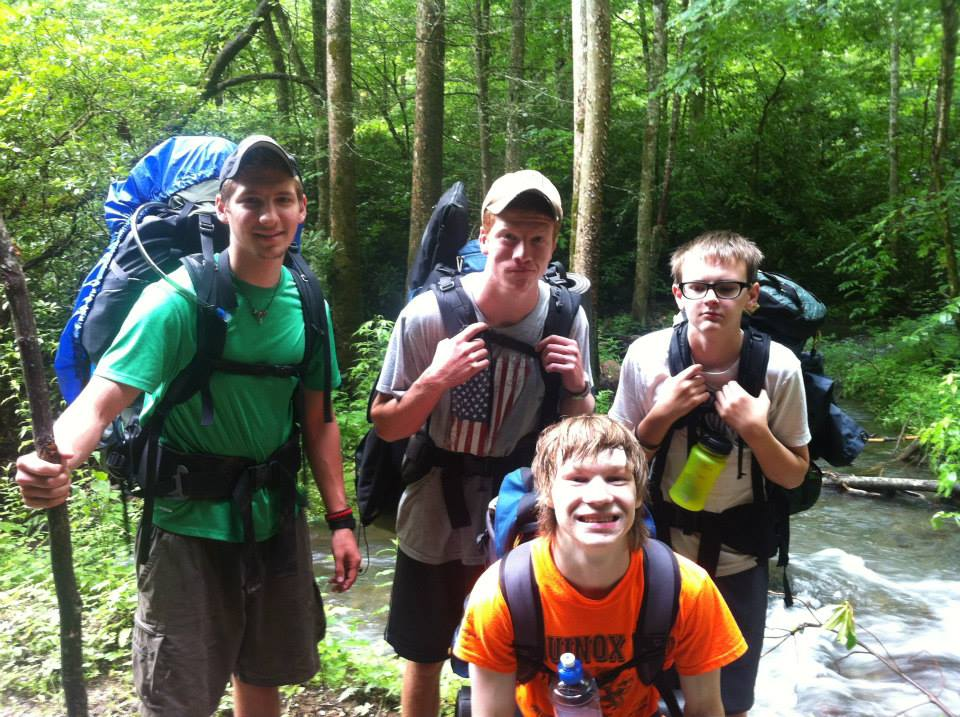

Outdoor Mission Camp (OMC) is a non-profit Outdoor Ministry in Maggie Valley, North Carolina. The Camp is located at the top of Fie Top Mountain, just one mile from Cataloochee Ski area. Just over a mile hike from OMC is the Great Divide Trail, which borders the Southeast Edge of Great Smoky Mountains National Park.
The Directors, Jamie and Ruffin Shackelford, have been hosting camps for 6 years. They have a passion for outdoor adventure, and sharing God's love with others. OMC offers custom camps, ski retreats, and a variety of other exciting yet refreshing experiences in the mountains each year!
More PhotosThe word Sherpa comes from the Himilayan people group who are known for guiding mountaineers to the top of Mt. Everest and other great summits. They are strong servants who receive little recognition for their guidance, but continue to serve nonetheless.
At OMC, a SHERPA is a young adult (19-26) who leads, guides, and enables campers at OMC to reach their highest goals. SHERPA's spend their whole summer receiving both wilderness training and spiritual input which promotes spiritual growth. SHERPA prepares young adults to lead others towards Christ in whatever capacity God calls them to in the future; whether that be a faithful co-worker at a local coffee shop, or a life-time missionary in a third-world country.
W.I.L.D. is a 2 week camp for High School aged students who are looking for more than a taste of adventure. Students select an Outdoor Skill they'd like to refine; either Rock Climbing or White Water Canoeing & Kayaking.
During the two weeks, they'll spend 5 consecutive days and nights backpacking in the Great Smoky Mountian National Park, then return to basecamp to shower and prepare for a week refining their chosen skill. Climbers will climb at local popular sites such as Looking Glass and Rumbling Bald, and Kayakers will venture the waters of the Tuckaseegee, Green, and Ocoee Rivers.
All trips are guided by trained outdoor leaders and have a small camper to leader ratio; usually less than 4 campers to 1 leader.